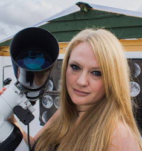

Mary
McIntyre has had a lifelong passion for astronomy. She
first saw Saturn as a young child, and has been
fascinated by the night sky ever since, declaring at age
six that one day she would be an astronaut! Sadly this
was not to be but in 2011 she completed the Astronomy
GCSE course, and in 2014 she completed the Open
University Certificate in Astronomy and Planetary
Science.
Mary has been an astrophotographer for about 8 years and
loves to photograph just about anything that is in the
sky! In her spare time she runs the UK Women in
Astronomy Network, and writes astronomy blogs and
articles for several online magazines and her own blog
page. Her astrophotographs have been featured on BBC Sky
at Night, BBC South Weather and a Channel 4 documentary
about British Weather. She has appeared in All About
Space Magazine, and has also had one of her photographs
used as the cover for a university text book. Mary
has photographed nearly every flaring Iridium
satellite. She is also an expert on
atmospheric phenomena from rainbows to aurorae to
noctilucent clouds, and in 2018 was elected a Fellow of the
Royal Astronomical Society.
Every clear night she can found in her rural Oxfordshire
garden with her camera!

More of Mary's images can be
found on her website here